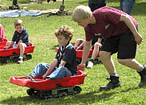
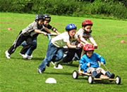
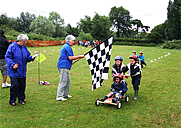
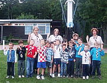
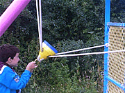

|
1st Letty Green Beavers
Beaver Scouts are young people usually aged between six and eight years old. They belong to the first and youngest Section in the Scouting family. Young people can join Beaver Scouts in the three months leading up to their sixth birthday. They can move to the next Section, Cub Scouts, between eight and eight years six months.
Easily recognised by their distinctive turquoise sweatshirts, Beaver Scouts enjoy making friends, playing games, making things, going on visits and helping others.
The 1st Letty Green Beaver Scout Colony meet at
Cowper Hall, Hertingfordbury Cowper Primary School, Birch Green, SG14 2LR
on Thursday evenings, during term time, between 5.30 and 6.45 pm. click here for Location
If you have a child who is interested in joining our Beaver Colony, then contact one of our Leaders to have their name added to the waiting list:
beavers@1stlettygreen.org.uk
The Beaver Scout Promise is:
I promise to do my best
To be kind and helpful
And to love God.
The Beaver Scout Motto is:
Be Prepared
Beaver and Cub Fun Day 2009
 On 21st June we joined the Cubs at a County Fun Day, held at Gilwell Park, Chingford.
On 21st June we joined the Cubs at a County Fun Day, held at Gilwell Park, Chingford.
The boys had a fantastic day trying out lots of activities such as grass sledging, rock climbing, inflatable drop slide, fair ground rides, archery, Hot Wheels contests, swimming, water slides and much more.
Night Hike 2009 - Much Hadham
The Beavers entered 2 teams in the District Night Hike on the 26th September. Both teams completed the course in fine spirits, despite some of the boys having rucksacks that seemed to be bigger than themselve
Herts 100 Day Camp 2009
.gif) The Beavers visited the Cubs at the Herts 100 Centenary camp
The Beavers visited the Cubs at the Herts 100 Centenary camp
on the 11th July and joined in many of the 100 activities that were on offer.
Soap Box Derby 2009
.gif) The Beavers entered two teams into the Derby but, unfortunately, despite a valiant effort, both were beaten in their first race.
The Beavers entered two teams into the Derby but, unfortunately, despite a valiant effort, both were beaten in their first race.
Pond Dipping in Lemsford Springs 2009
.gif) On 25th June, Andy Chapman kindly arranged for us to make a return visit to Lemsford Springs to do some pond dipping.
On 25th June, Andy Chapman kindly arranged for us to make a return visit to Lemsford Springs to do some pond dipping.
http://www.lemsfordonline.co.uk/springsHome.html
Andy led us on a walk around the reserve to see some of the bird boxes and we visited the hide and visitors centre. The boys then waded in, armed with nets and Wellington boots, to see who could fish out the most fresh water shrimps.
Click here to view gallery
Meeting Dates
All images on this site have been approved by the appropriate leaders and permission to show the images has been obtained from parents and guardians wherever possible. If you are the parent or guardian of a child whose image is shown on this website and you would like it to be removed, please contact us on chapman.lc@btinternet.com with details of the location of the image on the website, and we will remove it.
Gallery
Beaver and Cub Fun Day 2009
|
 |
 |
|
Herts 100 Day Camp 2009
|
 |
.gif) |
|
Soap Box Derby 2009
.gif) |
.gif) |
|
.gif) |
.gif) |
Pond Dipping in Lemsford Springs 2009
.gif) |
.gif) |
.gif) |
|
.gif) |
Spring Scavenger Hunt
 |
 |
Beaver and Cub Fun Day 2008
|  | ||
Soap Box Derby 2008
|  | ||
|  | ||
Beaver Fun Evening at Tolmers
 |
||
 |
 |
|
 |
 |
 |
All images on this site have been approved by the appropriate leaders and permission to show the images has been obtained from parents and guardians wherever possible. If you are the parent or guardian of a child whose image is shown on this website and you would like it to be removed, please contact us on chapman.lc@btinternet.com with details of the location of the image on the website, and we will remove it.
©Lemsford Online 2007 | created and maintained by www.colneywebservices.co.uk